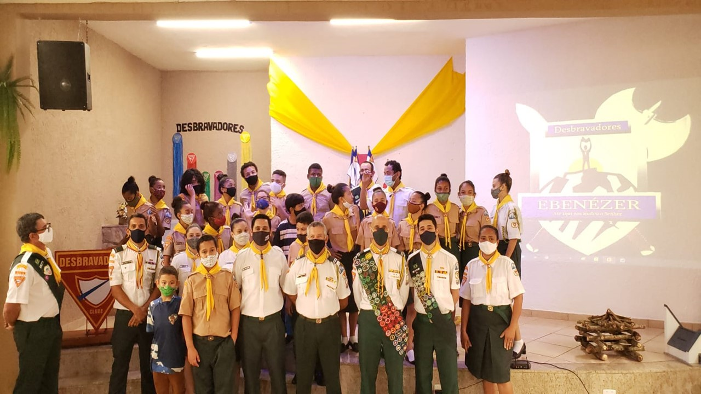

Quem somos:
Os Desbravadores, também conhecidos como Clube de Desbravadores, são um departamento da Igreja Adventista do Sétimo Dia,
trabalha especificamente com a educação cultural, social e religiosa de crianças e adolescentes situadas na faixa etária entre 10 e 15 anos.
Papel da liderança:
A liderança tem como papel "ajudar os jovens a compreender e amar a Deus e zelar pela igreja e pelo próximo".Segundo o Manual do clube de desbravadores, os objetivos e deveres da liderança do clube são: [11:05, 13/06/2022] Carlos Tim: Encorajar os desbravadores a descobrir o seu potencial dado por Deus e usar seusdons e habilidades para atender as expectativas do plano de salvação";
[11:09, 13/06/2022] Carlos Tim: Tornar como prioridade número um do programa do clube, a salvação pessoal de cada desbravador";
"Construir no desbravador o apreço por uma vida saudável (desfrutar de atividades ao ar livre) e cultivar neles o amor pela criação de Deus", bem como uma vida "fisicamente apta, ensinando-os a cuidar de seu corpo e estabelecer hábitos saudáveis";
"Ensinar ao desbravador habilidades envolventes e interativas de forma a tornar o tempo e os talentos do juvenil mais significativos";
"Dar oportunidade para o desenvolvimento de liderança encorajando os membros do clube a trabalhar em conjunto e compartilhando as responsabilidades da liderança.";
"E objetivar a promoção do desenvolvimento harmonioso do desbravador, cuidando de todos os aspectos necessários, sejam eles o físico, o social, o intelectual e o espiritual".
A liderança tem como papel "ajudar os jovens a compreender e amar a Deus e zelar pela igreja e pelo próximo".Segundo o Manual do clube de desbravadores, os objetivos e deveres da liderança do clube são: [11:05, 13/06/2022] Carlos Tim: Encorajar os desbravadores a descobrir o seu potencial dado por Deus e usar seusdons e habilidades para atender as expectativas do plano de salvação";
[11:09, 13/06/2022] Carlos Tim: Tornar como prioridade número um do programa do clube, a salvação pessoal de cada desbravador";
"Construir no desbravador o apreço por uma vida saudável (desfrutar de atividades ao ar livre) e cultivar neles o amor pela criação de Deus", bem como uma vida "fisicamente apta, ensinando-os a cuidar de seu corpo e estabelecer hábitos saudáveis";
"Ensinar ao desbravador habilidades envolventes e interativas de forma a tornar o tempo e os talentos do juvenil mais significativos";
"Dar oportunidade para o desenvolvimento de liderança encorajando os membros do clube a trabalhar em conjunto e compartilhando as responsabilidades da liderança.";
"E objetivar a promoção do desenvolvimento harmonioso do desbravador, cuidando de todos os aspectos necessários, sejam eles o físico, o social, o intelectual e o espiritual".
Provérbios 16:3
“Consagre ao Senhor tudo o que você faz, e os seus planos serão bem-sucedidos.” Se você colocar seus planos nas mãos de Deus, não haverá nenhuma dúvida de que terá sucesso, de que Ele te ajudará da melhor forma a conquistar seus objetivos. Porém é preciso ser forte, corajoso, disposto a lutar arduamente por aquilo que quer e ser honesto. Entregue a Deus, seja lá o que você busca. Ele terá a melhor resposta, não importa qual seja, pois Ele sabe de todas as coisas.
